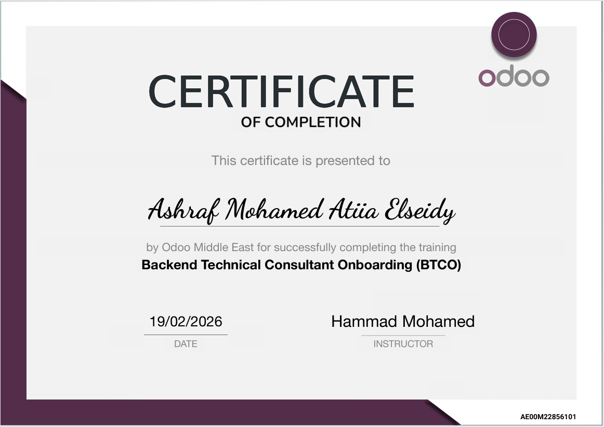

Ashraf Mohamed
Odoo Developer
Where Innovation Meets Experience
I am an Odoo Developer specializing in backend development, report QWeb generation, and application customization. Passionate about building maintainable, user-friendly business solutions.
About Me
I am Ashraf Mohamed, an Odoo Developer at Takamol for Information Systems based in Cairo, Egypt. I specialize in backend development, report generation, and application customization in Odoo. Skilled in Python, JavaScript, XML, HTML, and CSS, I am passionate about building maintainable, user-friendly business solutions.
Resume
Experience
Python Odoo Developer – Takamol for Information Systems Jun 2024 – Present (On-site, Egypt) - Developing PDF reports inside Odoo applications - Customizing screens and workflows - Working with JavaScript, Python, XML, HTML, CSS
Education
Al-Azhar University, Cairo – Faculty of Agriculture Bachelor’s Degree (2000 – 2004) Activities: Volleyball, Writing Stories
Skills
Portfolio
Some of my work in Odoo development:
- Customized Odoo screens and workflows
- Generated PDF reports integrated into applications
- Designed user interfaces with HTML/CSS
Certificates
Backend Technical Consultant Onboarding (BTCO) Odoo Middle East – Completed on 19/02/2026

Contact
📧 Email: ashrfalsy58@gmail.com
📍 Location: Cairo – Nasr City
🔗 LinkedIn: linkedin.com/in/developer-odoo-2272052b3